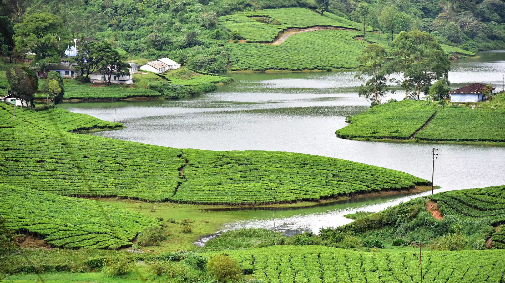
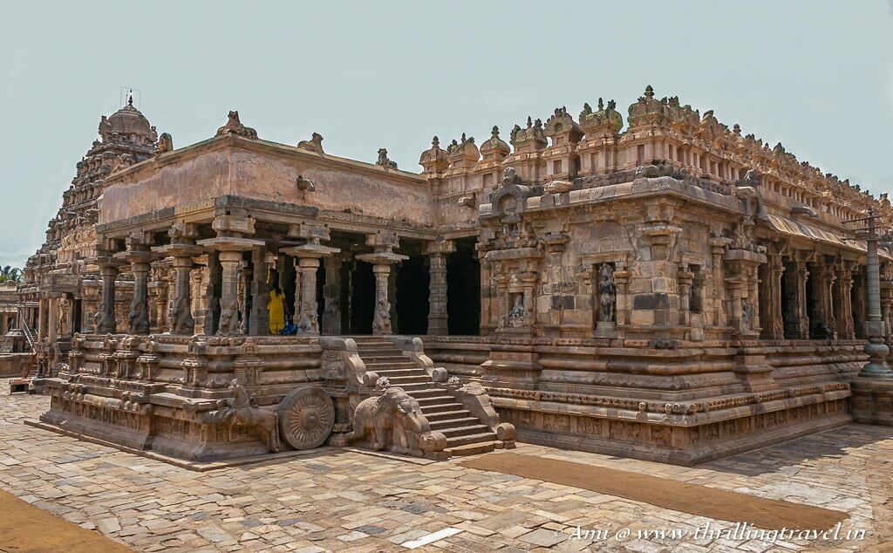
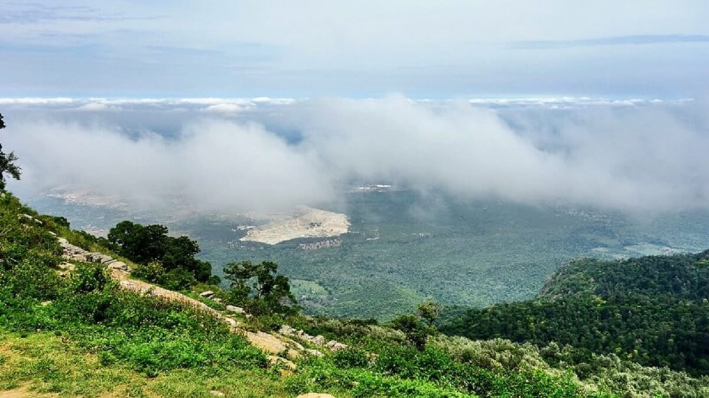
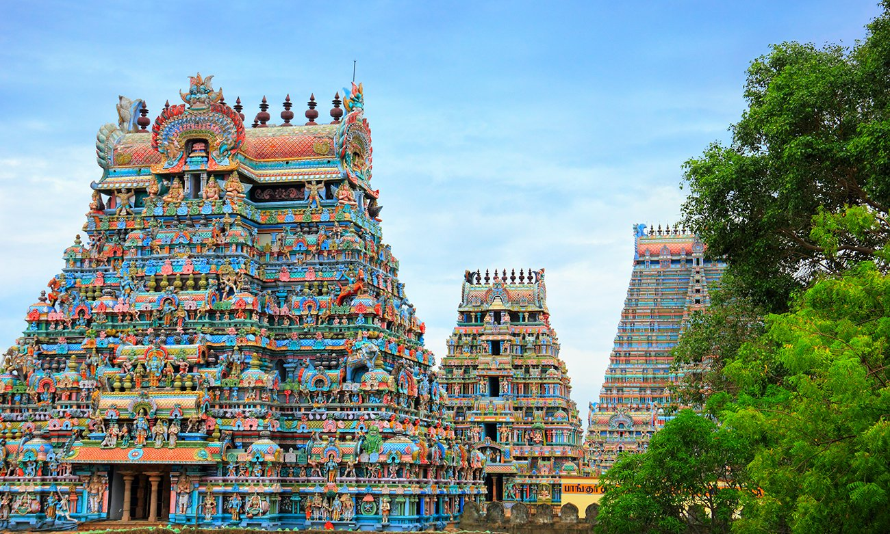
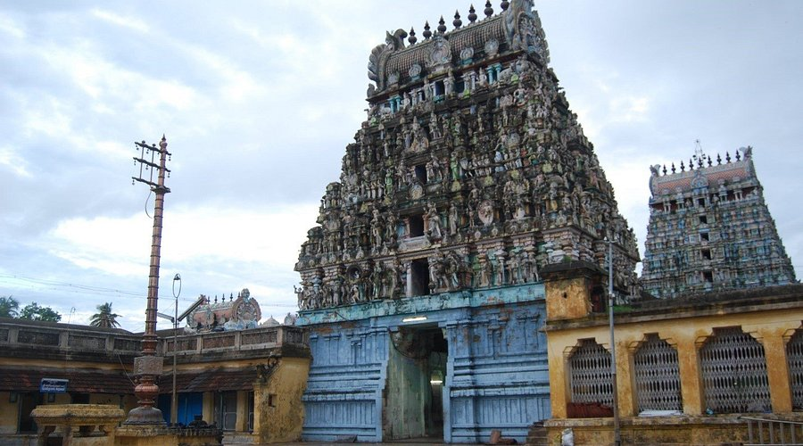
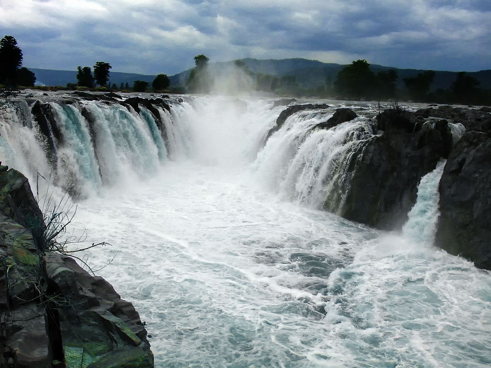
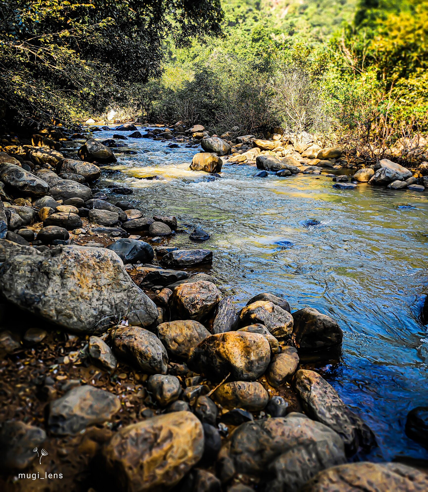
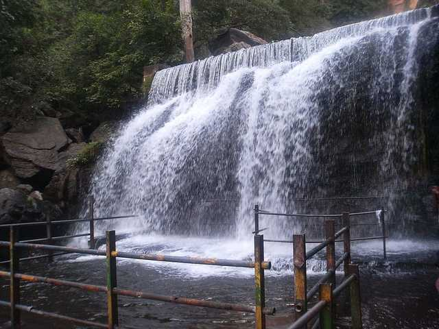
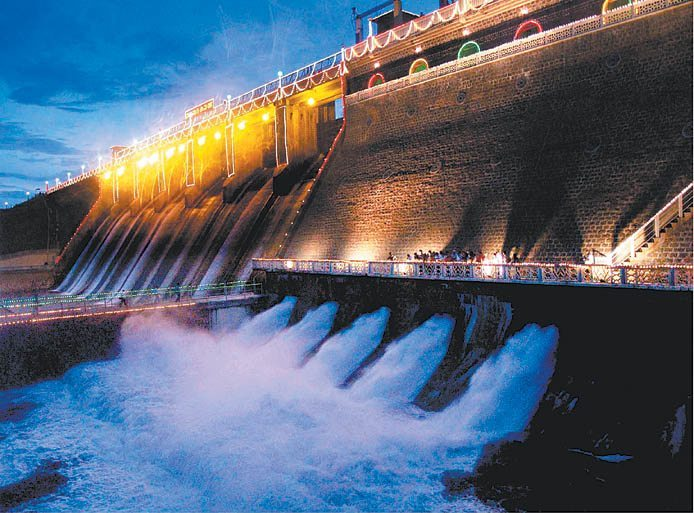
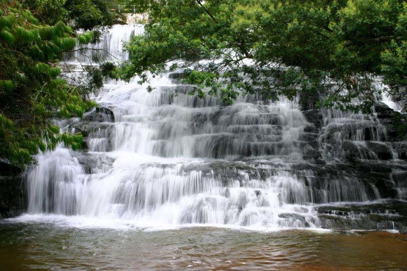

Meghamalai, also known as High Wavys, is a serene hill station in Tamil Nadu's Western
Ghats,
renowned for its tea
plantations, wildlife sanctuary, and misty mountains. It's a great destination
for nature lovers and
those seeking a
quiet getaway.
1. Location:
Meghamalai is a mountain range in the Theni district of Tamil Nadu, part of the Western Ghats.
2. Climate and Scenery:
It's known for its pleasant weather, misty mountains, and lush green tea and cardamom plantations.
3. Wildlife:
The Meghamalai Wildlife Sanctuary is home to various animals, including elephants,
spotted deer, and
gaur.
4. Tourist Attractions:
Key spots include the Maharaja Mettu viewpoint, Meghamalai waterfalls, and the tea and
cardamom
estates.
5. Accessibility:
The hill station can be reached via Theni, with road conditions varying, especially after
Chinnamanur, and experienced
drivers are recommended for the journey.

The Airavatesvara Temple at Darasuram, built by Rajaraja Chola II in the 12th century, is a
significant example of Chola
architecture. It's a UNESCO World Heritage Site known for its intricate sculptures, musical steps, and
chariot-like
structure.
1. UNESCO World Heritage Site:
It's one of the "Great Living Chola Temples" recognized by UNESCO, highlighting its historical and
architectural
importance.
2. Chariot-like Structure:
The temple's main structure resembles a chariot, with the front mandapa designed as a chariot drawn by
horses.
3. Musical Steps:
The temple features seven granite steps that produce different musical notes when tapped, a unique
architectural
feature.
4. Intricate Sculptures:
The temple is adorned with detailed sculptures depicting various mythological stories, including scenes
from the epics
and everyday life, like childbirth.
5. Dedicated to Shiva:
The temple is dedicated to Lord Shiva, and it is believed that Airavata, Indra's white elephant,
regained his lost color
and luster after bathing in the temple tank.

Yercaud, known as the "Poor Man's Ooty," is a serene hill station in Tamil Nadu's Eastern
Ghats.
Key highlights include
its picturesque landscapes, diverse wildlife, and plantations like
coffee, cardamom, and pepper.
Popular attractions
include the Yercaud Lake, Anna Park
(with a Japanese garden), and various viewpoints like Pagoda
Point and Lady's Seat.
1. Location and Climate:
Yercaud is a hill station situated in the Shevaroy Hills of the Eastern Ghats, at an altitude of
1,515 meters (4,969
feet). It offers pleasant weather, especially during the cooler months,
making it an attractive
destination.
2. Natural Beauty and Wildlife:
Yercaud is known for its lush greenery, silver oak, sandalwood, and teak forests. It also boasts
diverse wildlife,
including foxes, bisons, squirrels, mongooses, snakes, and various bird species.
3. Lakes and Waterfalls:
Yercaud Lake is a popular attraction for boating and relaxation. The Kiliyur Falls,
while sometimes
seasonal, offers a
scenic spot for visitors.
4. Viewpoints and Parks:
Pagoda Point, Lady's Seat, and Gent's Seat are popular viewpoints offering panoramic views.
Anna
Park, with its Japanese
Garden, is an ideal spot for picnics and recreation.
5. Horticulture and Agriculture:
Yercaud is known for its coffee plantations, along with cardamom, black pepper, guava, orange,
and
jackfruit. The region
also has a horticultural farm where saplings are available at reasonable prices.

The Kapaleeshwarar Temple, located in Mylapore, Chennai, is a significant Hindu temple dedicated to Lord
Shiva. It is
known for its Dravidian architecture, vibrant festivals, and historical and mythological importance.
1. Dravidian Architecture:
The temple is a prime example of Dravidian architecture, featuring towering gopurams (gateway towers)
and intricate
carvings. The main sanctum houses the idols of Kapaleeshwarar (Shiva) and Karpagambal (Parvati).
2. Historical Significance:
Built in the 7th century by the Pallavas, the temple was later rebuilt by the Vijayanagara Kings in the
16th century. It
is believed to be located near the original temple site, which was destroyed.
3. Mythological Importance:
The temple is associated with the legend of Goddess Parvati worshipping Lord Shiva in the form of a
peacock, giving the
area its name, Mylapore (Myl in Tamil means peacock).
4. Festival Celebrations:
The temple is renowned for the Panguni Peruvizha festival, a vibrant celebration of devotion and
tradition, attracting
large crowds.
5. Cultural Hub:
Kapaleeshwarar Temple is a cultural epicenter, influencing local arts, Carnatic music, and community
events. The temple
also houses a sacred tank (pushkarini) and various shrines dedicated to different deities.

Thirukadaiyur's Sri Abirami Amirthakadeswarar Temple is significant for its association with Lord
Shiva's victory over
Yama (the God of death) and for being a place where Shastiapthapoorthi
(60th birthday) and other
longevity rituals are
performed. It is also known for its Dravidian
architecture and the presence of the Chandra
Pushkarini sacred tank.
1. Legend of Markandeya and Yama:
The temple is famous for the legend of Markandeya, a young devotee of Lord Shiva, who was
saved from
the clutches of
Yama (the God of death) by Shiva.
2. Venue for Longevity Rituals:
Thirukadaiyur is a popular destination for Shastiapthapoorthi (celebration of 60th birthday)
and
other Ayul Shanthi
(longevity) rituals. These ceremonies are performed to seek blessings
for a long and healthy
life.
3. Architectural Significance:
The temple showcases classic Dravidian architectural style,
featuring intricate carvings, towering
gopurams (gateway
towers), and detailed sculptures.
4. Chandra Pushkarini:
The temple houses a sacred tank called Chandra Pushkarini, where devotees perform
ritualistic
bathing and cleansing.
5. Ata Veerattana Sthalam:
Thirukadaiyur is one of the eight Ata Veerattana Sthalams, which are temples where Lord Shiva
manifested his power and
courage.

Hogenakkal Falls, located on the Cauvery River in Tamil Nadu, is known for its scenic beauty, medicinal
waters, and
coracle rides. It's a popular spot for day trips, particularly from Bangalore, and offers a blend of
natural attractions
and cultural experiences.
1. Scenic Beauty and Landscape:
The falls are surrounded by lush greenery, rocky hills, and forests, creating a picturesque setting. The
Cauvery River
flows through the area, creating a wide, sheet-like cascade, especially when the water flow is high. The
carbonatite
rocks at the falls are among the oldest igneous rocks on Earth.
2. Coracle Rides:
Coracle rides are a popular activity, allowing visitors to get up close to the falls and experience the
misty spray.
These round, shallow boats, steered by local experts, offer a unique way to navigate the waters.
3. Medicinal Waters:
The water at Hogenakkal is believed to have therapeutic properties, with many people taking refreshing
dips in the falls
to potentially ease ailments and rejuvenate themselves.
4. Day Trip Destination:
Hogenakkal Falls is a popular day trip destination, especially for those in Bangalore, due to its
proximity. It's a
relatively short drive, and the falls offer a change of scenery and a chance to connect with nature.
5. Cultural Experiences:
The area around the falls is enriched by the culture of nearby tribal communities, adding another layer
to the visitor
experience. Visitors can also find local vendors selling food, including fish, and enjoy the overall
vibrant
atmosphere.

Puliyancholai, near Thuraiyur, is a popular natural attraction known for its waterfalls,
scenic
beauty, and serene
environment, making it a good spot for nature lovers and those
seeking a break from city life.
1. Waterfalls and Natural Springs:
Puliyancholai is famous for its waterfalls and natural springs that cascade through the
Kolli Hills,
offering visitors a
chance to enjoy the beauty of the cascading water and relax in
the natural pools.
2. Tranquility and Nature:
The area offers a peaceful and tranquil atmosphere, making it ideal for those seeking a
break from
the hustle and bustle
of city life.
3. Adventure and Trekking:
Puliyancholai provides opportunities for trekking, with trails leading to Agaya Gangai Falls
and
other scenic spots
within the Kolli Hills.
4. Picnic Spot:
It's a popular spot for picnics, with shaded seating areas and open green spaces, making it
suitable
for family outings
and gatherings.
5. Accessibility:
Puliyancholai is easily accessible by road from Thuraiyur, with bus services available,
making it a
convenient
destination for a day trip or a short getaway.

Suruli Falls, located in Theni, Tamil Nadu, is a captivating natural wonder known for its
two-stage cascading waterfall,
medicinal water, and historical significance. It is a popular tourist destination, especially during the
monsoon season
when the falls are at their most vibrant.
1. Two-Stage Waterfall:
The falls feature a 150-foot drop into a pool, followed by a second cascade of 40 feet, creating a
visually stunning
spectacle.
2. Medicinal Water:
The water of Suruli River, which forms the falls, is believed to have medicinal properties, attracting
those seeking
natural healing.
3. Historical Significance:
The falls are mentioned in the ancient Tamil epic, Silapathikaram, and are also associated with
religious sites like the
Kailasanathar Temple Cave and the Suruli Velappar Temple, adding to its spiritual appeal.
4. Surrounding Beauty:
The falls are nestled amidst the Meghamalai mountain range, offering breathtaking views and
opportunities for nature
walks.
5. Tourist Facilities:
Basic amenities like changing rooms, restrooms, and designated bathing areas are available for visitors,
ensuring a
comfortable experience.

The Vaigai Dam, located near Andipatti in Tamil Nadu, is a vital structure providing
irrigation and
drinking water to
several districts. Key points include its construction in 1959, its height
of 111 feet, and its
storage capacity of
6,143 mcft. The dam is also a popular
tourist destination, known for its scenic beauty and
recreational facilities.
1. Lifeline for the region:
The Vaigai Dam is a crucial source of water for irrigation and drinking water in the districts of
Theni, Dindigul,
Madurai, Sivagangai, and Ramanathapuram, making it a lifeline for the region.
2. Irrigation and Drinking Water Supply:
The dam provides water for irrigation to a vast agricultural area and also serves as a drinking
water source for major
cities like Madurai and Andipatti.
3. Construction and Inauguration:
The dam was constructed in 1959 and inaugurated by then Chief Minister K. Kamaraj.
4. Tourist Attraction:
The dam is a popular tourist spot, with a garden (Little Brindavan) and a musical fountain near
the
dam, making it an
ideal place for a one-day picnic.
5. Agricultural Research Station:
The Tamil Nadu government has established an Agricultural Research Station near the dam to
study
various crops,
demonstrating the dam's importance to agricultural development.

Pambar Falls, also known as Liril Falls or Vattakanal Falls, is a scenic waterfall in
Kodaikanal, known for its
cascading waters and natural beauty. It's a popular spot for nature lovers, photographers, and those
seeking a peaceful
escape.
1. Scenic Trek:
The falls are accessible via a trek through dense forests, offering a beautiful journey to the cascading
water.
2. Natural Pool:
At the base of the falls, a pool-like formation provides a refreshing spot for bathing or swimming.
3. Flora and Fauna:
The area around the falls is rich in flora and fauna, including endemic birds and butterflies.
4. Picnic Spot:
Pambar Falls is a great place for picnics, with its serene ambiance and natural surroundings.
5. Accessibility:
The falls are located 4 km from Kodaikanal town center and are easily reachable by auto-rickshaw or
taxi.